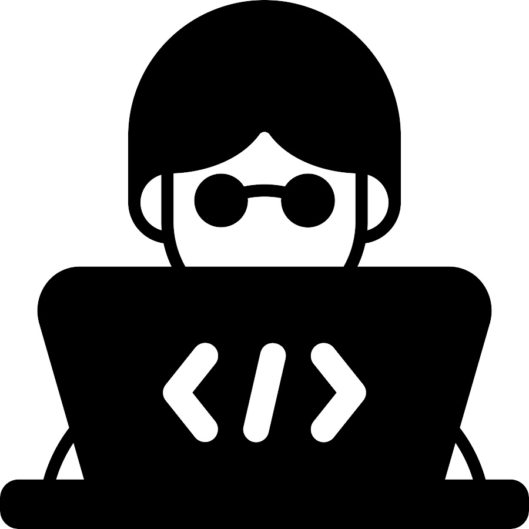
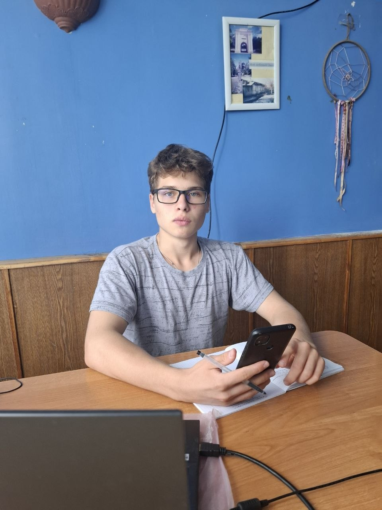
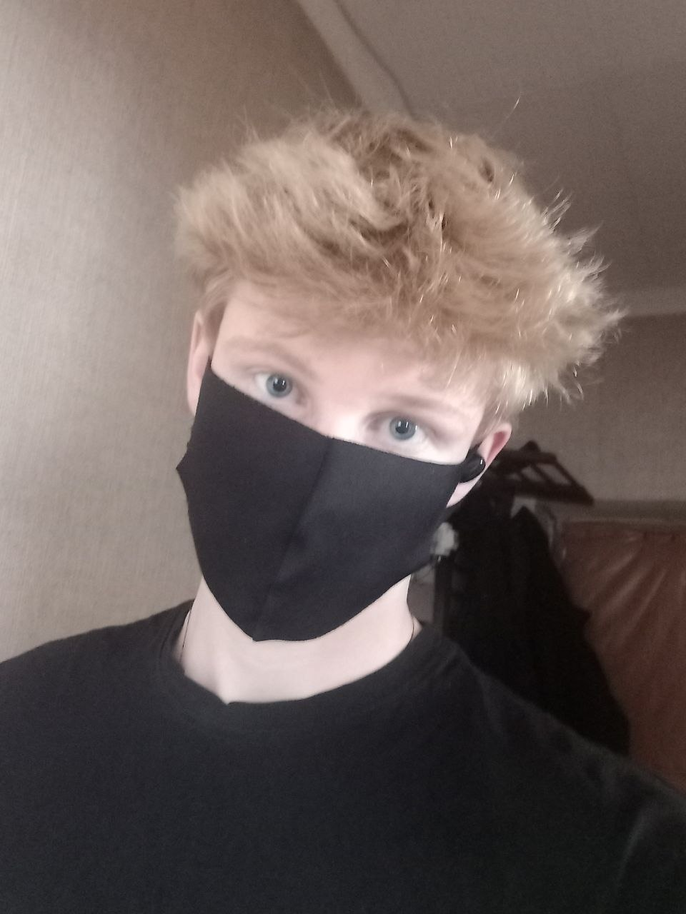

Назад

Артём Батюшкин - российский программист. Именно он в будущем создаст то, что перевернёт нашу индустрию и сделает Россию мировым IT-центром. Умение работать в команде, лидерские качества, ответсвенность, всё это есть в этом человеке. Именно он движет нашей группой, и именно он сплотил нас в начале первого года обучения.

Денис Трифонов - будущий программист. И в школе, и в колледже старался и старается хорошо учиться и проявлять активность. На каждую группу есть очень мало таких отличников, или вовсе нет. Быть лучшим в чём то одном - всегда хорошо. Уметь очень многое, но на среднем уровне - замечательно. Но быть лучшим во многом - превосходно. Если он чего то хочет, то всегда добьётся этого.